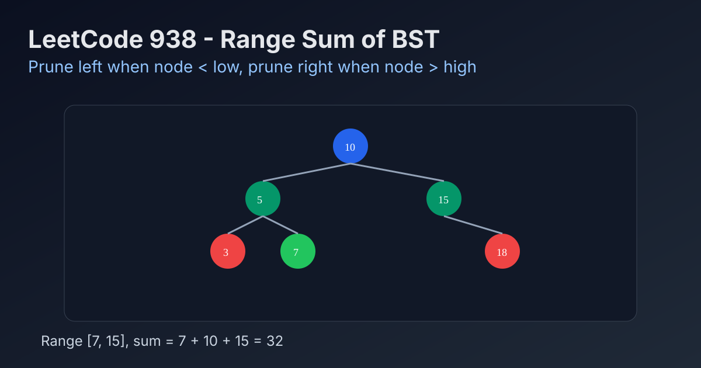

LeetCode 938: Range Sum of BST (Prune by BST Ordering)
LeetCode 938BSTDFSToday we solve LeetCode 938 - Range Sum of BST.
Source: https://leetcode.com/problems/range-sum-of-bst/

English
Problem Summary
Given the root of a Binary Search Tree and two integers low and high, return the sum of all node values within the inclusive range [low, high].
Key Insight
Use BST ordering to prune recursion. If node.val < low, the whole left subtree is too small, so only recurse right. If node.val > high, the whole right subtree is too large, so only recurse left.
Algorithm
- DFS from root.
- If node is null, return 0.
- If node value is below low, recurse only into right child.
- If node value is above high, recurse only into left child.
- Otherwise add node value and recurse both sides.
Complexity Analysis
Time: O(n) worst case, with effective pruning on balanced trees.
Space: O(h) recursion stack, where h is tree height.
Common Pitfalls
- Forgetting the range is inclusive.
- Traversing both children even when one side can be pruned.
- Using global mutable sum carelessly across test cases.
Reference Implementations (Java / Go / C++ / Python / JavaScript)
class Solution {
public int rangeSumBST(TreeNode root, int low, int high) {
if (root == null) return 0;
if (root.val < low) return rangeSumBST(root.right, low, high);
if (root.val > high) return rangeSumBST(root.left, low, high);
return root.val + rangeSumBST(root.left, low, high) + rangeSumBST(root.right, low, high);
}
}func rangeSumBST(root *TreeNode, low int, high int) int {
if root == nil {
return 0
}
if root.Val < low {
return rangeSumBST(root.Right, low, high)
}
if root.Val > high {
return rangeSumBST(root.Left, low, high)
}
return root.Val + rangeSumBST(root.Left, low, high) + rangeSumBST(root.Right, low, high)
}class Solution {
public:
int rangeSumBST(TreeNode* root, int low, int high) {
if (!root) return 0;
if (root->val < low) return rangeSumBST(root->right, low, high);
if (root->val > high) return rangeSumBST(root->left, low, high);
return root->val + rangeSumBST(root->left, low, high) + rangeSumBST(root->right, low, high);
}
};class Solution:
def rangeSumBST(self, root: Optional[TreeNode], low: int, high: int) -> int:
if not root:
return 0
if root.val < low:
return self.rangeSumBST(root.right, low, high)
if root.val > high:
return self.rangeSumBST(root.left, low, high)
return root.val + self.rangeSumBST(root.left, low, high) + self.rangeSumBST(root.right, low, high)var rangeSumBST = function(root, low, high) {
if (!root) return 0;
if (root.val < low) return rangeSumBST(root.right, low, high);
if (root.val > high) return rangeSumBST(root.left, low, high);
return root.val + rangeSumBST(root.left, low, high) + rangeSumBST(root.right, low, high);
};中文
题目概述
给定一棵二叉搜索树根节点 root，以及区间 [low, high]，返回所有节点值在该闭区间内的节点和。
核心思路
利用 BST 有序性做剪枝。若 node.val < low，左子树全都更小，可直接跳过左子树；若 node.val > high，右子树全都更大，可直接跳过右子树。
算法步骤
- 从根节点做 DFS。
- 空节点返回 0。
- 当前值小于 low，只递归右子树。
- 当前值大于 high，只递归左子树。
- 否则把当前值与左右子树结果相加。
复杂度分析
时间复杂度：最坏 O(n)，平衡树上通常可因剪枝减少访问。
空间复杂度：O(h)，其中 h 为树高（递归栈）。
常见陷阱
- 忘记区间是闭区间（包含边界）。
- 明明能剪枝却仍然递归两侧，导致不必要遍历。
- 用全局变量累计时没有在新用例前重置。
多语言参考实现（Java / Go / C++ / Python / JavaScript）
class Solution {
public int rangeSumBST(TreeNode root, int low, int high) {
if (root == null) return 0;
if (root.val < low) return rangeSumBST(root.right, low, high);
if (root.val > high) return rangeSumBST(root.left, low, high);
return root.val + rangeSumBST(root.left, low, high) + rangeSumBST(root.right, low, high);
}
}func rangeSumBST(root *TreeNode, low int, high int) int {
if root == nil {
return 0
}
if root.Val < low {
return rangeSumBST(root.Right, low, high)
}
if root.Val > high {
return rangeSumBST(root.Left, low, high)
}
return root.Val + rangeSumBST(root.Left, low, high) + rangeSumBST(root.Right, low, high)
}class Solution {
public:
int rangeSumBST(TreeNode* root, int low, int high) {
if (!root) return 0;
if (root->val < low) return rangeSumBST(root->right, low, high);
if (root->val > high) return rangeSumBST(root->left, low, high);
return root->val + rangeSumBST(root->left, low, high) + rangeSumBST(root->right, low, high);
}
};class Solution:
def rangeSumBST(self, root: Optional[TreeNode], low: int, high: int) -> int:
if not root:
return 0
if root.val < low:
return self.rangeSumBST(root.right, low, high)
if root.val > high:
return self.rangeSumBST(root.left, low, high)
return root.val + self.rangeSumBST(root.left, low, high) + self.rangeSumBST(root.right, low, high)var rangeSumBST = function(root, low, high) {
if (!root) return 0;
if (root.val < low) return rangeSumBST(root.right, low, high);
if (root.val > high) return rangeSumBST(root.left, low, high);
return root.val + rangeSumBST(root.left, low, high) + rangeSumBST(root.right, low, high);
};
Comments